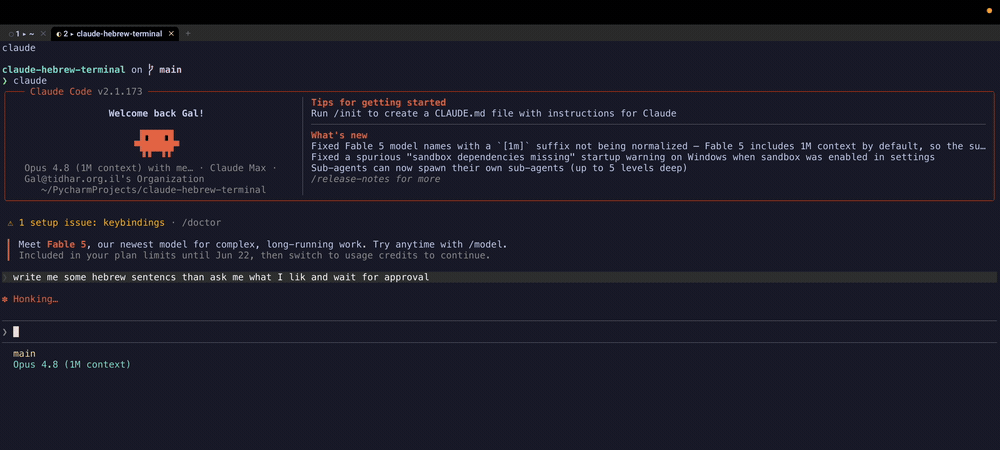
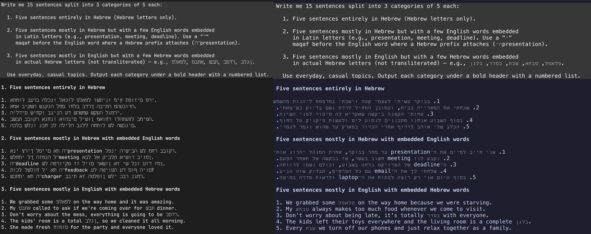

Terminals · BiDi · Claude Code
I made my terminal speak Hebrew — and accidentally built a cmux-style Claude agent cockpit
I work in Hebrew and English all day, and my AI coding agent kept printing Hebrew backwards. The fix turned into something bigger: a terminal that renders right-to-left correctly and behaves like the multi-agent cockpit I'd been missing — and the whole thing installs itself by handing a prompt to Claude.

The annoyance
Open Claude Code, ask for anything in Hebrew, and watch the words come out reversed and full of gaps. It's not the model — the output is correct. It's the terminal drawing it wrong. Same prompt, two terminals:

Why it happens (the real lesson)
Hebrew is stored in logical order — first letter first. To display it, a terminal must run the Unicode Bidirectional Algorithm (BiDi) and flip right-to-left runs at draw time. Most terminals — including Ghostty, and therefore cmux, plus iTerm and Warp — are LTR-only and simply don't. A font can't fix this: direction is the renderer's job.
So the fix isn't in my app or my prompt. It's picking a terminal that does BiDi. Among mainstream, GPU-accelerated terminals, that's WezTerm:
-- ~/.config/wezterm/wezterm.lua
config.bidi_enabled = true
config.bidi_direction = 'AutoLeftToRight'WezTerm reorders RTL runs for display but keeps logical order internally, so copy-paste stays correct. (Hebrew needs no letter-joining, unlike Arabic — so WezTerm's one BiDi limitation doesn't bite here.)
The second bug: gaps between letters
Direction fixed, the Hebrew still looked wrong — a space after every letter. Different problem: a proportional Hebrew font being stuffed into fixed monospace cells. Each glyph is narrower than its cell, leaving a gap. The tell is in the font's advances:
$ wezterm ls-fonts --text 'שלום'
# uneven x_adv (3,6,7,8…) = proportional = gaps
# uniform x_adv = monospace = cleanThe fix is a monospace Hebrew font whose advance matches the Latin one. Miriam Mono CLM does, and the gaps vanish.
Rebuilding the cmux feel
I genuinely liked cmux's workflow — a tab per agent, each labelled, with live status. Since its renderer can't do Hebrew, I rebuilt the parts I missed on WezTerm's own tabs, no multiplexer in the way (tmux defeats the outer terminal's BiDi, so it's tabs, not panes):
- ⌘P — fuzzy-pick a git project → opens a labelled tab in it.
- ⌘⇧P — same, and launches
claudein that project. - Live tab badges —
○idle ·◐working ·●needs you — driven by Claude Code hooks that write each session's state, keyed by the WezTerm pane id. - An actionable notification — "Claude is waiting · Show" whose button focuses the exact tab that's waiting.
- Smart links — web opens the browser; file links open a native popup (render Markdown, Quick Look, reveal in Finder, …) instead of hijacking an editor.
A few sharp edges only showed up under real use: WezTerm spawns with the bare launchd PATH, so fd and claude need an absolute path or a login shell; launching an agent had to go through mux_window():spawn_tab{cwd} + send_text so it lands in the right folder; and you have to validate the config with ls-fonts, because show-keys happily ignores invalid fields. Normal terminal-config archaeology.
The twist: I let Claude install Claude
Here's the part I like most. The audience for "make my terminal read Hebrew for Claude Code" already has a capable agent on their machine. So instead of shipping a brittle bash script that has to anticipate every setup, the repo's hero is a runbook a Claude can execute — it adapts to Apple-Silicon-vs-Intel, an existing config, your projects folder, and verifies each step. You paste one line:
Set up my terminal to read Hebrew correctly and run Claude Code agents like cmux. Follow the runbook at github.com/tatarco/claude-hebrew-terminal/blob/main/SKILL.md — install it, configure it, and verify Hebrew renders right-to-left.
A deterministic ./install.sh is there too, for people who'd rather run one command. But the agent-native path is the point: the tool that needed fixing is also the tool that does the fixing.
Try it
It's open source (MIT), macOS, ~2 minutes. Paste the prompt above into Claude Code, or:
git clone https://github.com/tatarco/claude-hebrew-terminal
cd claude-hebrew-terminal && ./install.sh
open -a WezTerm